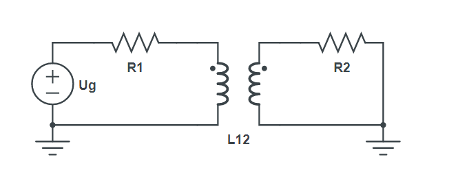

Linear inductive transformer
Circuit description
In this example we will examine a circuit with a linear inductive transformer.

Goals
- Calculate primary and secondary currents
Modeling the circuit
First we include Symbolics.jl and CircuitS.
using Symbolics
include("../CircuitS.jl")The we create the circuit and add all of the elements as shown in the picture above:
circuit = create_circuit()
add_element([Resistor, "R1", 1, 3], circuit)
add_element([Resistor, "R2", 0, 2], circuit)
add_element([Voltage, "Ug", 3, 0], circuit)
add_element([InductiveT, "LIT", [1, 0], [2,0], ["L1", "L2", "L12"], ["I1", "I2"] ], circuit)Simulation
Unfortuantelly, due to JuliaSymbolics simplify errors, we cannot symbolically solve MNA system of equations for this circuit. Instead we will pass in values for each component and apply phasor transform s=j*w.
We achieve this by passing a third parameter into init_circuit function, a string that represents w, and also a replacment for w inside third argument with some numerical value (w=>1000 in this case).
We will apply the following replacements:
\[R_1 = 100 \Omega \\ R_2 = 100 \Omega \\ U_g = 5V \\ L_1 = 1\mu H \\ L_2 = 1\mu H \\ L_3 = 0.5\mu H \\ I_1 = 50 mA \\ I_2 = 0 \\ \omega = 1000\]
After we've built everything, we initialise and simulate the circuit.
@variables R1 R2 R L1 L2 L12 L I2 I1 Ug w
init_circuit(circuit, Dict([R1=>100, R2=>100, Ug=>5, L1=>1e-6, L2=>1e-6, L12=>5e-7, I1=>50e-3, I2=>0, w=>1000 ]), "w")
result = simulate(circuit)
println(result)Dict{Any, Any} with 6 entries:
"I_LIT_1" => 0.05 - 5.0e-7im
"V3" => 5.0
"V2" => 5.0e-10 + 2.5e-5im
"I_Ug" => 5.0e-7im - 0.05
"I_LIT_2" => -5.0e-12 - 2.5e-7im
"V1" => 6.25e-10 + 5.0e-5im
Julia uses im symbol for imaginary numbers, so you should avoid using said symbol as a circuit parameter.